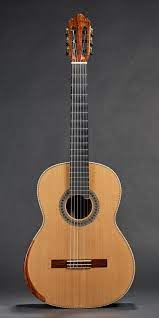

The classical guitar, also called Spanish guitar, is a member of the guitar family used in classical music and other styles. An acoustic wooden string instrument with strings made of gut or nylon, it is a precursor of the modern steel-string acoustic and electric guitars, both of which use metal strings. Classical guitars derive from the Spanish vihuela and gittern of the 15th and 16th century. Those instruments evolved into the 17th and 18th-century baroque guitar—and by the mid-19th century, early forms of the modern classical guitar. Today's modern classical guitar was established by the late designs of the 19th-century Spanish luthier, Antonio Torres Jurado.
For a right-handed player, the traditional classical guitar has 12 frets clear of the body and is properly held up by the left leg, so that the hand that plucks or strums the strings does so near the back of the sound hole (this is called the classical position). However, the right-hand may move closer to the fretboard to achieve different tonal qualities. The player typically holds the left leg higher by the use of a foot rest. The modern steel string guitar, on the other hand, usually has 14 frets clear of the body (see Dreadnought) and is commonly held with a strap around the neck and shoulder.
The phrase "classical guitar" may refer to either of two concepts other than the instrument itself:
The instrumental finger technique common to classical guitar—individual strings plucked with the fingernails or, less frequently, fingertips
The instrument's classical music repertoire